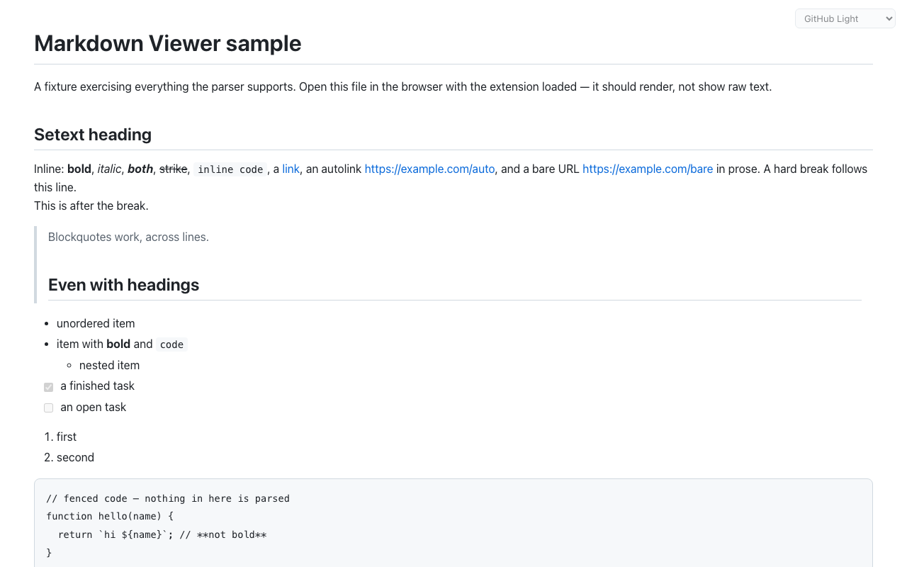
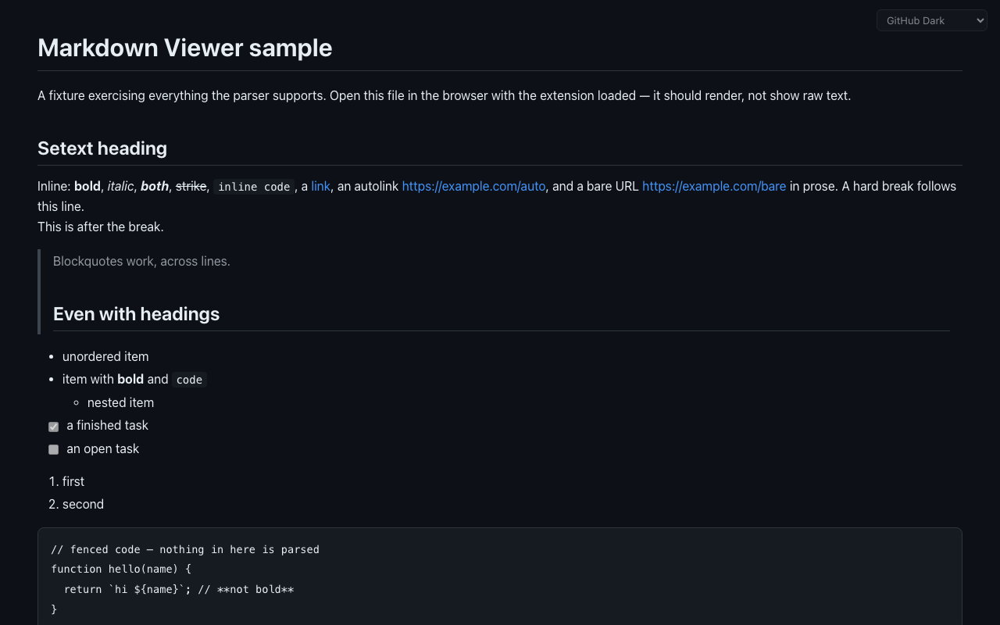
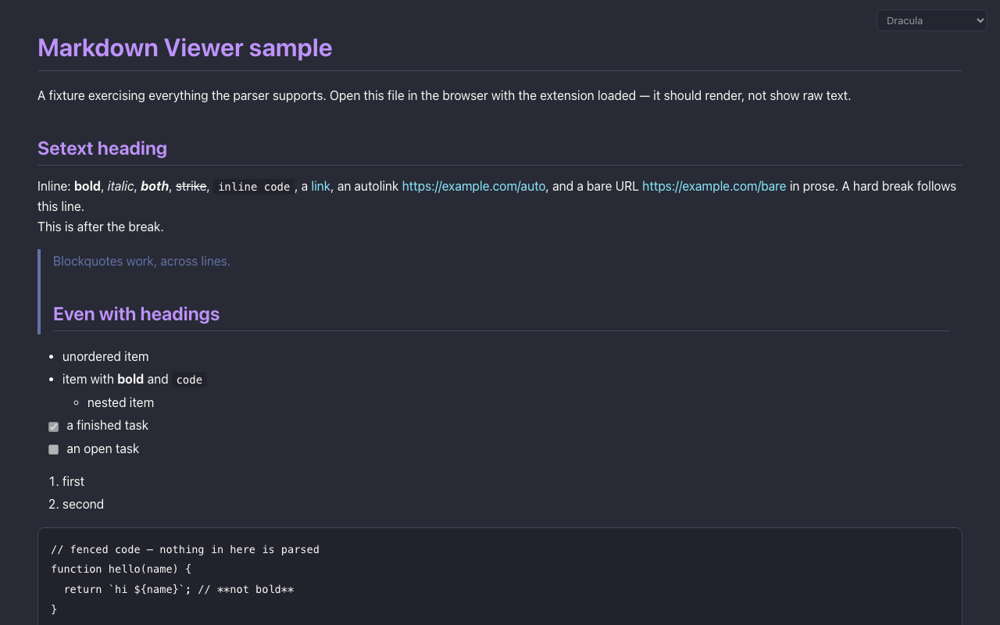
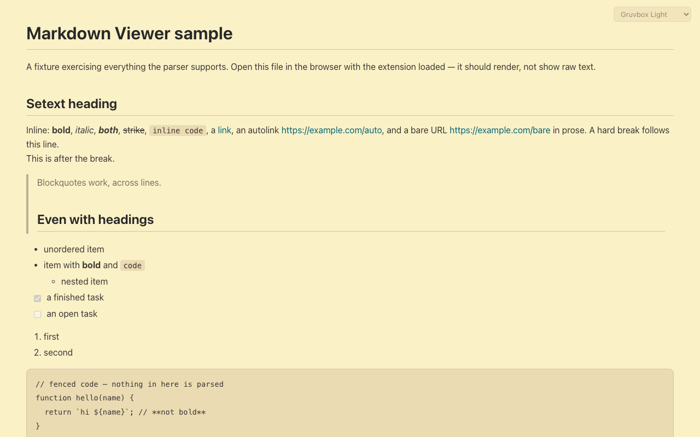
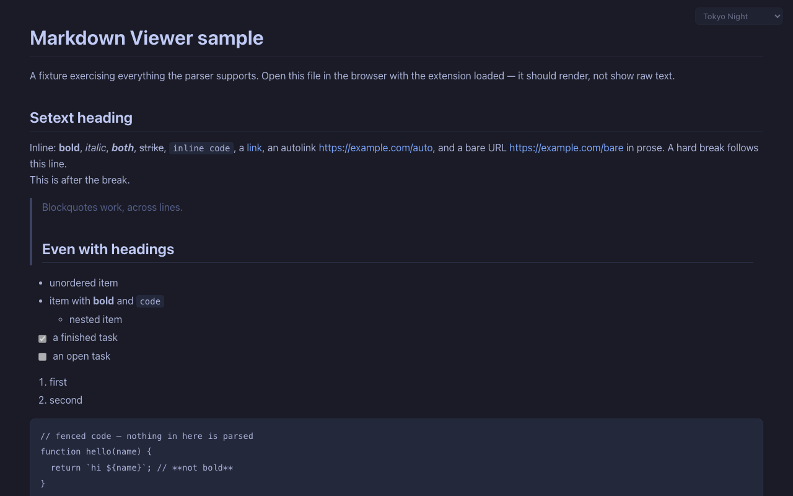

Markdown Viewer
Markdown Viewer
Markdown Viewer
Markdown Viewer
Open any .md file — on the web or on your own disk — and read it
as a clean, formatted document instead of raw text. Twelve themes, and not a
single network request.
Browsers show Markdown files as a wall of plain text. This extension notices when the page you opened is really a Markdown file and renders it properly — and leaves every other page alone.
Headings, bold and italic, code blocks, blockquotes, nested and task lists, tables with alignment, links, images, horizontal rules.
Switch from a control in the corner of the page. Your choice is saved, synced by the browser, and applied live to every open Markdown tab.
YAML frontmatter is shown as a muted block instead of breaking the layout the way raw renderers do.
Headings get GitHub-style ids, so #section links land
exactly where they should.
Works on file:// pages once you allow file access — read
your notes and READMEs straight off your disk.
No server, no account, no analytics, no network requests. The only thing it stores is the name of your theme. Privacy policy.
Light, dark, and everything between — the same document, restyled with one click.





Works in any Chromium browser — Chrome, Edge, Brave, Arc, Dia. A Chrome Web Store listing is on the way; until then, install from source:
chrome://extensions and switch on Developer mode (top right)..md file — it renders. Pick a theme from the control in the top-right corner.